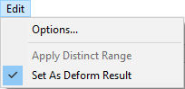
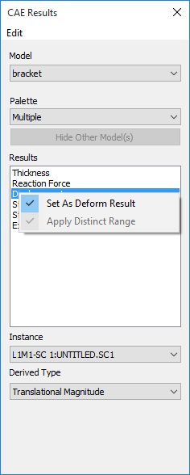
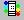
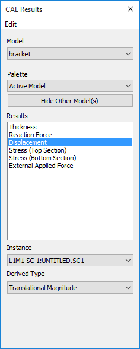
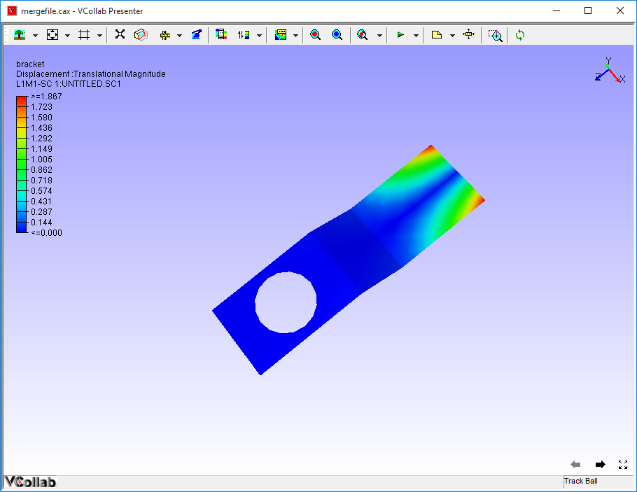
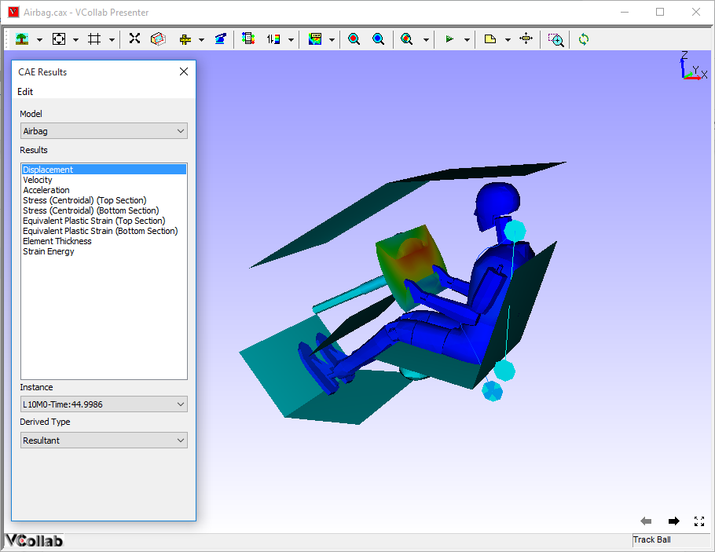
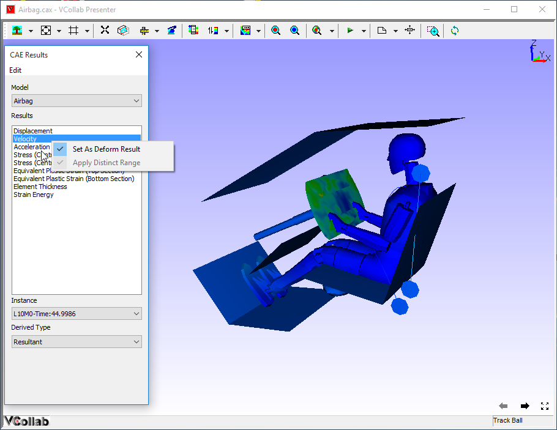

CAE Results
VCollab Presenter’s users can select a CAE result or a derived type and load and model them using the CAE results panel.
What is CAE Model?
A CAE model refers to a set of information belonging to one CAE geometry.
In other words, a CAE model refers to a CAE file.
CAE Results Panel

The various fields and options available in the CAE Results panel are explained below:
Model : Lists all the CAE models in the scene. It will contain more than one model if multiple models are merged into the scene.
Palette Options:
Active Model Only the current model will be active. A single color palette for the active model will be displayed. The active model will be displayed with color plot and all other models will be displayed in part color. This is the default option selected.
Multiple Multiple models will be active. Each model will be displayed with its own color palette and result.
Combined In this mode all models are displayed using a current model palette and results. Only the combined palette is displayed. The result list will display only common results. The changes to palette/legend parameters are applied to all models.
The Combined option:
- Responds to both models for ‘CAE Results’ dialog events, usually not.
- Applies current model palette on the existing models.
- Applies No-Result value, if user clicked result is not available for other models.
- Animates both models for common result selected.
- If any model does not contain user selected result, no linear animation exists for the model.
- Allows users to probe all models.
- Allows users to save this state into viewpoint states.
Benefits
- Users can merge two models with similar geometry and compare the CAE results.
- Visualize the differences on CAE design through linear and transient animations.
- Users can probe both models and compare nodal results.
- Users can save the compared results into cax as viewpoint states.
Multiple Models: Common Legend
A single legend is used across multiple models. Result considered for this legend may not be the same for all models. However, it is the same in the case of Combined palette.
Hide Other Model(s): Hides all other models existing in the scene.
Results List Box: lists all the results for the user to select. By default, the first result in the list is selected.
Instance Drop down list of load cases and mode cases. “L1M1” is referred to as Load Case 1 and Mode Case 1. Default Selection is L1M1.
Derived Type drop down lists all possible derived types based on the result type selected in the Result List Box. Default selection is,
- Translational Magnitude for vectors
- Von Mises Stress for Tensors and
- None for Scalar result.
Complex Type is enabled only for complex eigen data and lists the following complex components.
- Real
- Imaginary
- Magnitude
- Phase
- Angle (User has to enter phase angle value).
Angle in Degrees refers to user defined phase angle value. This is applicable for complex eigen result. Default angle is zero.
The following three options will be enabled and visible if two or more models exist or merged.
Results List Box : lists all the results for the user to select. By default, the first result in the list is selected.
Instance: Drop down list of load cases and mode cases. “L1M1” is referred to as Load Case 1 and Mode Case 1. Default Selection is L1M1.
Derived Type: Drop down list of all possible derived types based on the result type selected in the Result List Box.
Default selection is,
- Translational Magnitude for vectors
- Von Mises Stress for Tensors and
- None for Scalar result.
Complex Type is enabled only for complex eigen data and lists the following complex components.
- Real
- Imaginary
- Magnitude
- Phase
- Angle (User has to enter phase angle value).
Angle in Degrees refers to user defined phase angle value. This is applicable for complex eigen results. Default angle is zero.
Edit Menu in CAE Results Panel

Options: Allows users to set result display names and attributes.
Apply Distinct Range: Changes current result legend into distinct legend.
Set As Deform Result: Sets selected result as deformation result.
Context menu
Right click in Results list to open the context menu
Set as Deform Result: Sets the selected result as Deform result. Displacement, Displacement - Vibration Mode and Deformation results become deform results automatically when selected.
Apply Distinct Range: <need explanation>

Selection of results and Its effects on Legend and model contour
- Application computes CAE result values for visible parts only, while changing the result.
- If the user hides one part and applies a new result to the model, Legend is computed for visible parts alone.
- Computed color information is applied to the model for contour values.
Steps to select a result
- Open the CAE Results panel by clicking CAE Results from viewer context menu or  icon

- Select a result, say Displacement.
- Select an Instance, say L1M1.
- Select a Derived type, say Translational Magnitude.
- Notice that CAE result defined is applied on the viewer model as below.

Steps to set and view deform result for vector types
- Load a CAX file
- Click CAE | Result List from the context menu
- Current deform result is mentioned in the bottom left corner of the viewer.

- Select any other vector type result.

- Observe that deform result is still Displacement, even though a different result is selected.
- Select Set As Deform Result from the context for current selection.

- View Deformation Result in the viewer as selected type.
Steps to utilize the Combined Palette option
- Load a CAX file, which contains CAE model.
- Merge another CAX file, which contains the same geometry but different CAE model results.
- If both model geometry coincides in scene, move one of them away using the Transform option in the product tree context menu.
- Click CAE | Result List from context menu,
- Select Combined Palette option to apply current palette for both the models.
The user can now do all CAE operations on both the models to compare CAE results. For example, probe the same node in both the models and compare the nodal results.